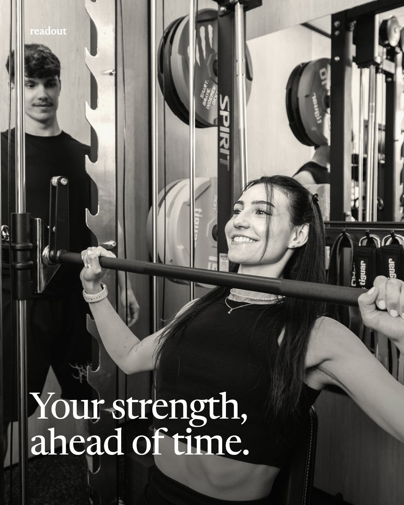
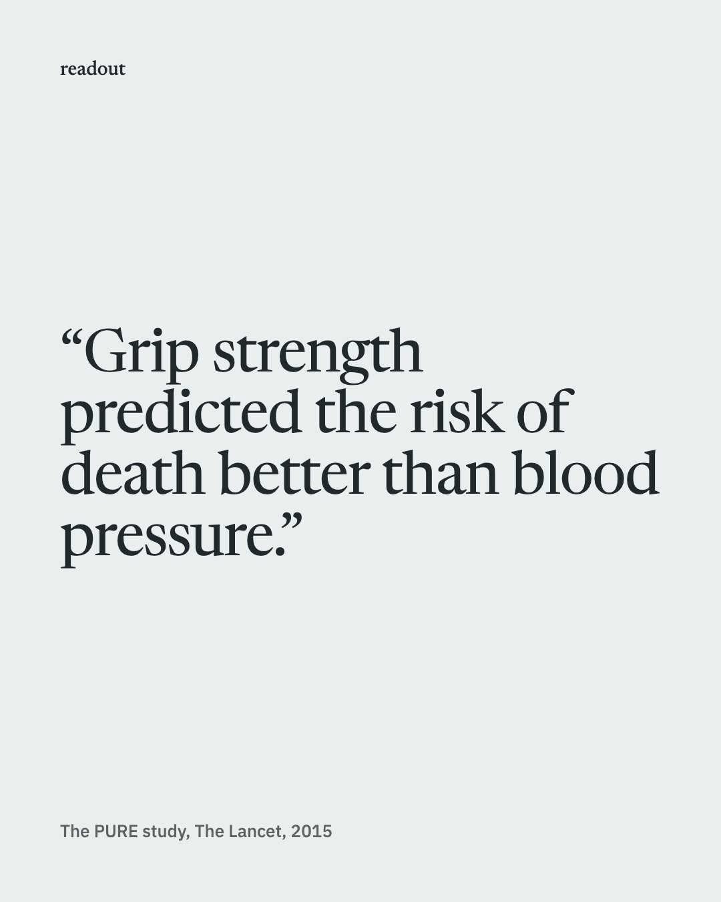
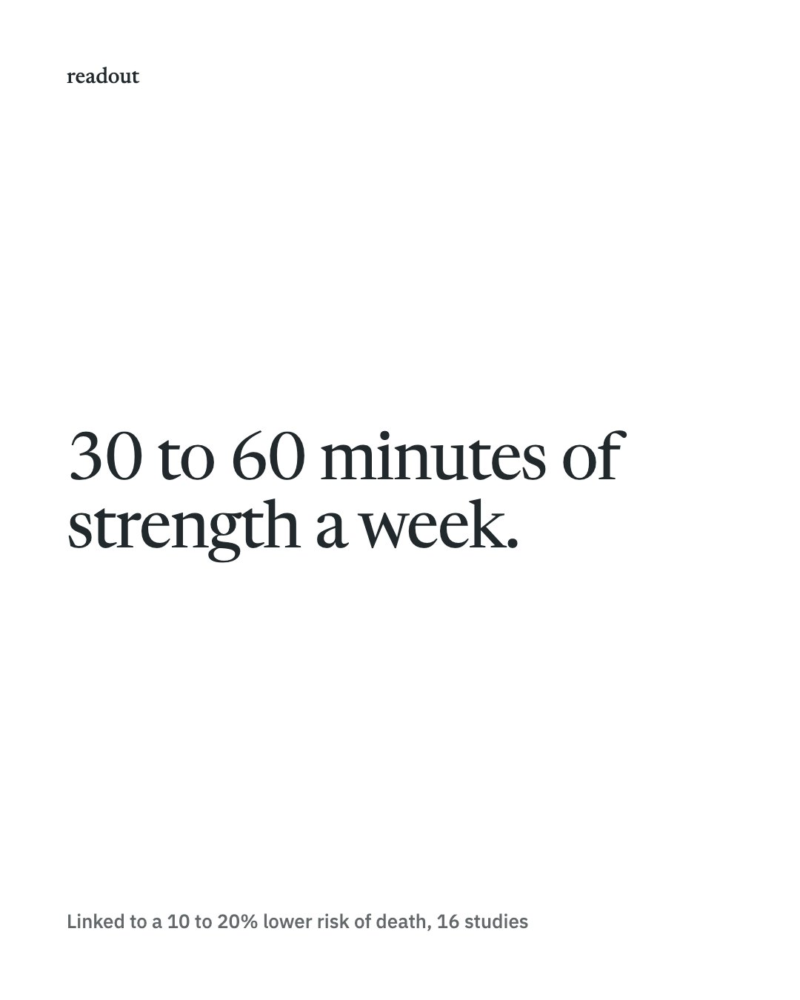
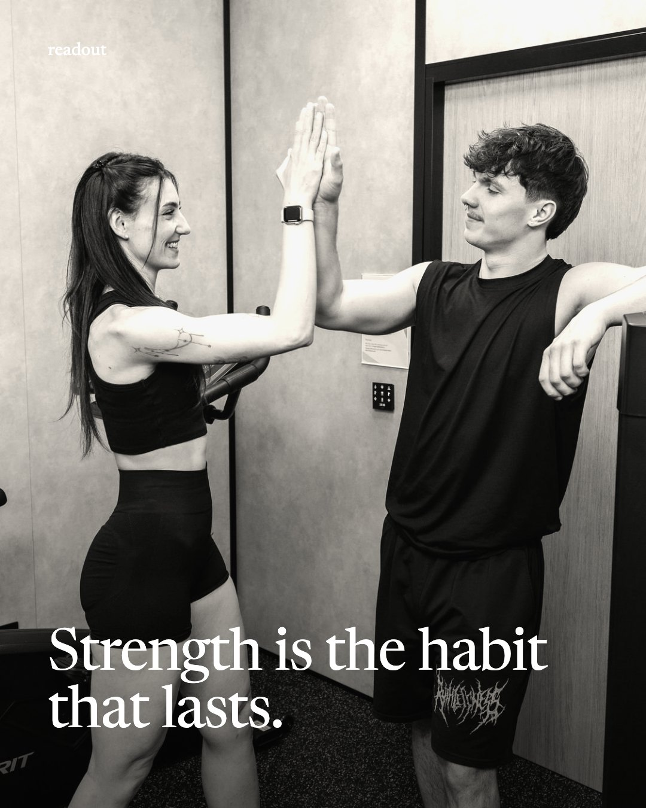
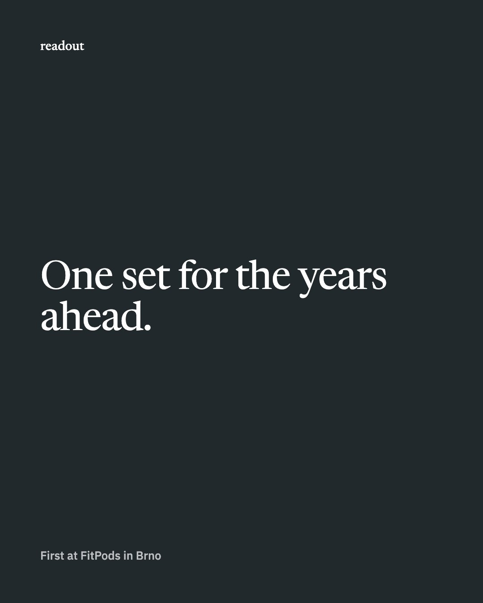

Direction 3, copied from Neko Health
Strong for life.
Your strength, ahead of time. For everyone who thinks about the years ahead, at any age.
Round one: copied as close as possible from Neko Health, its home page, its calm member results, its e-mails and its feed, with our sensor and story swapped in. The skills and our own version come next.
The story
Strength is the habit that lasts.
Most people train for the next summer. The strongest reason to lift is the rest of your life. Strength is one of the habits most linked to a long, healthy life, and it is the easiest to lose without noticing.
A sensor on every machine keeps the record: every rep, every year, compared. The app turns it into your next workout, in plain words. Calm, precise and human, like a clinic you look forward to.
The enemy
Training for looks, then quitting.
The promise
A record of your strength that builds year after year.
The brand kit
Built like Neko’s.
Logo
The name alone, set in the serif. Quiet on white, white on ink, ink on beige.
Colour
Ink#22292C
Muted#4E6A72
Pale#E9EEEF
Beige#EEE7DC
White#FFFFFF
Good#3BA37A
Keep an eye#E0A43B
Type
Your strength, ahead of time
The most valuable hour you can spend in a gym.
Neko sets titles in Orleans and text in IBM Plex Sans. Stand-in here: Newsreader for titles, IBM Plex Sans as it is.
Photography
Warm, soft, people of every age in natural light. Our FitPods photos stand in, toned warm. This direction needs its own colour shoot.
Voice
Your strength, ahead of time.
It all starts with one set.
Linked to, never adds years.
Calm, exact, generous. Only what the studies say, in their words.


Posts and stories
Copied from Neko’s feed.




